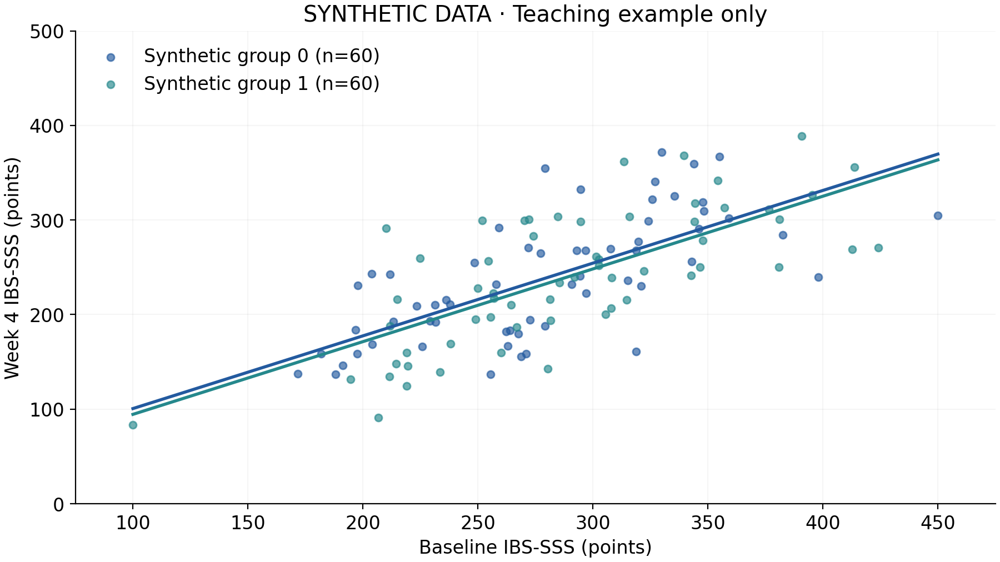

압축을 모두 풀고 시작하기.md가 보이는 paper-workshop-1128 폴더를 엽니다.
작업 폴더에서 아래 요청을 실행합니다. 자신의 결과는 my-results/에 저장합니다.
작업 폴더에서 첫 요청
시작하기.md를 읽고 현재 폴더에서 오늘 사용할 파일을 찾아줘.
공개 논문의 세 연습 문장, 합성 CSV, 분석 계획의 실제 경로를 알려줘.
새 결과는 my-results에만 저장하고, 원본과 예제 정답은 그대로 두자.
다음으로 넘어갈 기준 연습 문장·CSV·분석 계획을 찾았으면 시작합니다. 분석 예제와 정답은 직접 판단한 뒤 엽니다.
04 기본 흐름
워크숍 파이프라인의 확인 절차
워크숍 파이프라인은 연구 질문에서 원고 검토까지 이어지는 작업 순서입니다.
연구 질문 → 근거 → 작성·분석 → 저자 검토
어디서 멈추나
다시 볼 곳
인용이 붙은 문장
원문의 어느 문단·표가 그 주장을 지지하는지 확인합니다.
AI가 만든 숫자
분모·집단 방향·단위를 표와 코드에서 찾아봅니다.
원고를 고친 직후
영향을 받는 결과를 현재 파일로 다시 확인합니다.
보고된 숫자의 산술이 맞아도 분석 방법이 적절한지는 별도 판단이 필요합니다. 수정한 모든 파일이 자동으로 재검사되지는 않습니다.
05 IBS 선택 실습공개 논문
실습 ① 근거와 문장 대조하기
먼저 Böhn 등의 공개 초록에서 Methods의 군별 배정 수와 Results에서 4주 반응률을 보고한 문장을 찾으세요. 아래는 원문 인용이 아니라 강사가 만든 연습 문장입니다.
Böhn 등의 시험에서 저포드맵 식이는 전통적 IBS 식이 조언보다 우월했다.
4주 뒤 증상 중증도 점수가 기저보다 50점 이상 감소한 비율은 저포드맵군 50%, 전통적 조언군 46%였다.
군 간 차이가 통계적으로 유의하지 않았으므로 두 식이의 효과는 동등하다고 입증됐다.
내 판단과 AI 판정을 나란히 적기
01_인용과_원고.md의 연습 문장 세 개를 Böhn 논문과 대조해줘.
내가 먼저 적은 판단은 바꾸지 말고 옆에 AI 검토 열을 추가해줘.
문장별로 서지 확인, 읽은 범위(초록/전문), 근거 위치, 지지 여부와 이유를 적어줘.
철회·정정은 실제 조회한 곳과 날짜를 적고, 조회하지 못하면 미확인으로 남겨줘.
공개 자료로 확인한 것만 my-results/reference-check.md에 저장해줘.
내 검증표를 쓴 뒤 원문과 비교
4주 뒤 증상 중증도 점수가 기저보다 50점 이상 감소한 환자는 저포드맵군 19/38명(50%), 전통적 IBS 식이 조언군 17/37명(46%)이었다(P=.72).
배정된 사람은 38명과 37명, 중재를 끝낸 사람은 33명과 34명입니다. 분모를 바꾸면 다른 비율이 됩니다. 같은 초록에서 P=.62는 증상 중증도의 군 간 비교, P=.72는 50점 이상 감소한 사람의 비율 비교입니다. 원문에서 가져온 숫자라도 서로 바꿔 쓸 수 없습니다.
다음으로 넘어갈 기준 검증표에 판정 한 줄과 다시 찾아갈 원문 위치가 있으면 다음으로 갑니다. 연결이 안 되면 읽은 범위를 ‘교육용 메모’라고 표시합니다.
06 IBS 선택 실습공개 논문
실습 ② 비평을 Results 한 문장으로
“우월했다”를 지운 자리에 무엇을 쓸 수 있을까요?
앞에서 확인한 같은 논문을 사용합니다. AI에게 원문 위치와 수정안을 받되, 문장을 고칠지는 저자가 결정합니다. 초록에 설명이 없다는 것과 연구 방법에 결함이 있다는 것은 다릅니다.
수정 전후와 채택 이유 남기기
앞서 확인한 연습 문장 하나와 근거 위치를 읽고 저자 입장에서 비평해줘.
주장이 결과를 넘어선 단어나 구절을 짚고, 초록 Results에 넣을 한국어 문장 하나를 제안해줘.
비교군·측정 시점·반응 기준을 보존하고, 초록에 없는 방법이나 결과를 덧붙이지 마.
원문 위치와 수정 전후를 나란히 적고, 내가 채택·보류 이유를 쓸 칸을 남겨줘.
my-results/revision.md에 저장해줘.
직접 쓴 뒤 비교할 수정 예시
수정 후 4주 뒤 증상 중증도 점수가 기저보다 50점 이상 감소한 환자는 저포드맵군 19/38명(50%), 전통적 IBS 식이 조언군 17/37명(46%)이었다(P=.72).
채택 이유 비교군과 반응 기준을 밝히고 관찰한 결과를 그대로 썼습니다. 단일 시험을 근거로 장기 효과나 동등성을 주장하지 않습니다.
다음으로 넘어갈 기준 my-results/revision.md에 수정한 문장, 근거 위치, 채택·보류 이유가 하나씩 있으면 충분합니다.
07 IBS 선택 실습별도의 교육용 자료
실습 ③ 말로 분석을 맡기고 코드로 검산하기
이제 실제 식이 시험과 분리된 합성 자료를 씁니다. 가상 A·B군은 두 식이군을 뜻하지 않습니다.
120행(A·B 각 60행)의 기저 점수를 보정한 뒤 4주 점수의 B−A 차이를 구합니다. 모델을 바꾸기 전에 CONSORT 2025의 결과 보고 항목처럼 군별 결과, 차이의 방향과 정밀도에 주목하세요. 여기서는 보고 연습에만 적용합니다.
SYNTHETIC_IBS.csv와 plan.md를 읽어. 기존 정답을 복사하지 말고 분석 코드를 작성해줘.
입력 파일은 바꾸지 마. A=0, B=1이고, 4주 점수를 집단과 기저 점수로 설명하는 선형모형이야.
B−A 보정 차이(점), 95% 신뢰구간과 p값을 구하고 표·그림·잔차 진단·실행 기록을 남겨줘.
02_분석_결과형식.md에 맞춰 my-results/result.json을 저장해줘. 코드와 표·그림에도 SYNTHETIC을 표시해줘.
같은 CSV로 다시 실행해 숫자가 일치하는지 확인해줘. 실행하지 못했다면 그 사실을 적어줘.
검사기도 틀린 답을 잡아낼까요?
예제 파일 하나에는 B−A의 부호를 일부러 뒤집어 두었습니다. 이를 먼저 검사한 뒤 자신이 만든 결과와 비교합니다. 입력 자료·분석 계획·검사 기준은 그대로 둡니다.
틀린 예제와 내 결과를 같은 검사로 확인
먼저 python check_result.py tests/SYNTHETIC_sign_error.json을 실행하고, 왜 실패했는지 설명해줘.
그다음 python check_result.py my-results/result.json을 실행해 두 결과를 비교해줘.
검사기·기준값·데이터는 수정하지 마. 내 결과가 다르면 코드 또는 결과 문장의 원인을 찾아줘.
최종적으로 실제로 확인한 파일과 남은 의문을 my-results/verification.md에 기록해줘.
직접 실행한 뒤 예제 결과와 비교
기저 점수를 보정한 B−A는 −6.13점(95% 신뢰구간 −23.77~11.51, p=.4926)입니다. +6.13점이라고 쓴 예제는 FAIL이어야 합니다. 같은 자료로 다시 계산해 일치하는지 보고 잔차 진단 그림도 확인하세요.

강사 예제. 이 합성 결과로 식이의 치료 효과를 해석할 수 없습니다.자료가 어떻게 만들어졌나
시드 20261128. 기저 점수는 평균 280·표준편차 65의 정규 난수를 100–450으로 제한했습니다. 4주 값은 40 + 0.72 × 기저 점수 − 12 × 집단 + 정규 오차(표준편차 48)를 0–500으로 제한하고 반올림했습니다. −12는 제한 전 생성식의 계수입니다. 표본 수는 수업용 선택입니다.
다음으로 넘어갈 기준 틀린 예제 FAIL, 자신의 결과 PASS와 재실행한 수치를 확인합니다. 실행할 수 없으면 강사 예제에서 부호와 단위를 찾아 ‘예제 대조’로 기록합니다.
08 검토
고친 문장에 맞춰 근거도 다시 보기
지금의 표와 어제의 본문을 섞지 않도록, 문장의 근거와 확인한 파일을 같이 적습니다. 검토하지 못한 것은 다음 사람이 볼 수 있게 남깁니다.
마지막 수정 후
고친 문장이 인용한 원문과 맞는지, 기준 집단·값·단위가 표와 맞는지 다시 확인해줘.
수정한 파일과 검토에 쓴 파일명을 적고, 다시 확인한 것과 아직 보지 않은 것을 나눠줘.
이전 판의 판정을 새 파일에 그대로 붙이지 마.
내가 남길 한 줄 도구·표시된 버전, 사용 목적과 요청, 사용한 문장 또는 코드, 저자가 직접 확인한 근거. 모르는 버전은 추정해 적지 않습니다.